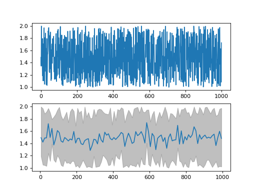

Usage¶
Start by importing UBCS LCP auxiliary package library.
import ubcs_auxiliary
Threading¶
- ubcs_auxiliary.multithreading.new_thread(function, *args, **kwargs)[source]¶
launches the input ‘function’ in a separate thread with daemon == True.
Explanation: Some threads do background tasks, like sending keepalive packets, or performing periodic garbage collection, or whatever. These are only useful when the main program is running, and it’s okay to kill them off once the other, non-daemon, threads have exited.
Without daemon threads, you’d have to keep track of them, and tell them to exit, before your program can completely quit. By setting them as daemon threads, you can let them run and forget about them, and when your program quits, any daemon threads are killed automatically. @Chris Jester-Young https://stackoverflow.com/a/190017/8436767
- Parameters
- function:
function object
- *args:
iterable of arguments
- **kwargs:
- dictionary of keywords
- daemon:
flag, if the thread is daemon(True) or not(False).
- Returns
- thread:
thread object
Examples
the example of usage
>>> def func(*args,**kwargs): print('keywords',kwargs) print('args',args) from time import time,sleep t1 = time() sleep(args[0]) t2 = time() print('this thread slept for {} seconds'.format(t2-t1)) print('input parameters: args = {}, kwargs = {!r}'.format(args[0],kwargs['keyword'])) >>> new_thread(func, 1, keyword = 'this is key 1 value') this thread slept for 1.002244234085083 seconds input parameters: args = 1, kwargs = 'keywords argument'
Advance Sleep¶
advance Sleep functions author: Valentyn Stadnytskyi data: 2017 - Nov 17 2018
functions: psleep - precision sleep takes intsleep with inputs t, dt and interupt as a function.
The precision sleep class. functiob: psleep - sleep specified amount of time with sub milisecond precision test_sleep - for testing purposes. will print how much time the code waited. This is important for the Windows platform programs if precise wait is required. The Windows OS has ~15-17 ms latenct - the shortest time between attentions from OS.
OS¶
- ubcs_auxiliary.os.does_filename_have_counterpart(src_path, dst_root=None, counterpart_extension='')[source]¶
checks if the ‘src_path’ has counterpart with extension ‘counterpart_extension’.
- Parameters
- filename (string)
- counterpart_extension (string)
- Returns
- boolean (boolean)
- ubcs_auxiliary.os.exclude()[source]¶
Returns a list of patterns to exclude from a search. Add terms as required.
- ubcs_auxiliary.os.find(topdir, name=[], exclude=[])[source]¶
A list of files found starting at ‘topdir’ that match the patterns given by ‘name’, excluding those matching the patterns given by ‘exclude’.
- Parameters
- topdir (string)
- name (list)
- exclude (list)
- Returns
- file_list (list)
Examples
>>> res = anfinrud_auxiliary.os.walk('ubcs_auxiliary/') >>> for i in res: print(i[0]) ...: ubcs_auxiliary/ ubcs_auxiliary/tests ubcs_auxiliary/tests/__pycache__ ubcs_auxiliary/__pycache__
Python 3.7.4 (v3.7.4:e09359112e, Jul 8 2019, 14:54:52) Type ‘copyright’, ‘credits’ or ‘license’ for more information IPython 7.8.0 – An enhanced Interactive Python. Type ‘?’ for help. In [1]: from time import time In [2]: import auxiliary In [3]: res = auxiliary.os.walk(‘/’) In [4]: t1 = time(); lst = list(res); t2 = time(); print(t2-t1, len(lst)) 3.9815242290496826 1346
Python 2.7.16 (v2.7.16:413a49145e, Mar 2 2019, 14:32:10) Type “copyright”, “credits” or “license” for more information. IPython 5.8.0 – An enhanced Interactive Python. In [1]: from time import time In [2]: import anfinrud_auxiliary In [3]: res = auxiliary.os.walk(‘’) In [4]: t1 = time(); lst = list(res); t2 = time(); print(t2-t1, len(lst)) (0.77646803855896, 1346)
- ubcs_auxiliary.os.find_recent_filename(root, include, exclude, newest_first=True)[source]¶
find the list of files or folders that have any terms specified in the list ‘include’ and do not have terms specified in ‘exclude’. The extra parameter reverse_order specified whether return the newest or oldest one.
- Parameters
- source (string)
- include (list)
- exclude (list)
- sort (string)
- Returns
- file_list (list)
- ubcs_auxiliary.os.get_current_pid_memory_usage(units='GB', verbose=False)[source]¶
returns current process memory footprint.
- ubcs_auxiliary.os.image_file_names_from_path(beamtime, path_name)[source]¶
Returns image file names found under path_name. Typically used with ‘Reference_*() , which specifies which directories contain data for which zinger-free-statistics are to be acquired. The zinger-free-statistics include Imean and Ivar, which are used to construct UC_psi.npy.
- ubcs_auxiliary.os.listdir(root, include=['.hdf5'], exclude=[], sort='')[source]¶
returns list of files from a ‘source’ directory that have terms listed in ‘include’ and doesn’t terms listed in ‘exclude’. Extra parameter ‘sort’ can be used to sort the output list. If left blank, no sorting will be performed.
- Parameters
- source (string)
- include (list)
- exclude (list)
- sort (string)
- Returns
- file_list (list)
Examples
>>> res = ubcs_auxiliary.os.get_list_of_files('/',['.hdf5'])
Parallel Processing¶
- ubcs_auxiliary.multiprocessing.function(N, **kwargs)[source]¶
an example function for test purposes. It sleeps for N seconds. Prints statements when sleep starts and finishes.
- ubcs_auxiliary.multiprocessing.new_child_process(function, *args, **kwargs)[source]¶
launches the input ‘function’ in a separate thread with daemon == True.
Explanation: Some threads do background tasks, like sending keepalive packets, or performing periodic garbage collection, or whatever. These are only useful when the main program is running, and it’s okay to kill them off once the other, non-daemon, threads have exited.
Without daemon threads, you’d have to keep track of them, and tell them to exit, before your program can completely quit. By setting them as daemon threads, you can let them run and forget about them, and when your program quits, any daemon threads are killed automatically. @Chris Jester-Young https://stackoverflow.com/a/190017/8436767
- Parameters
- function:
function object
- *args:
iterable of arguments
- **kwargs:
dictionary of keywords
- Returns
- process:
process object
Examples
the example of usage
>>> def func(*args,**kwargs): print('keywords',kwargs) print('args',args) from time import time,sleep t1 = time() sleep(args[0]) t2 = time() print('this thread slept for {} seconds'.format(t2-t1)) print('input parameters: args = {}, kwargs = {!r}'.format(args[0],kwargs['keyword'])) >>> new_child_process(func, 1, keyword = 'this is key 1 value') this thread slept for 1.002244234085083 seconds input parameters: args = 1, kwargs = 'keywords argument'
Numerical¶
plotting functions author: Valentyn Stadnytskyi data: 2017 - Nov 17 2018
- ubcs_auxiliary.numerical.array_to_binary(arr=array([1, 1, 1, 1, 1, 1, 1]))[source]¶
takes an integer and converts it to 8 bit representation as an array. If float number is passed, it will be converted to int.
- ubcs_auxiliary.numerical.bin_data(data=None, x=None, axis=1, num_of_bins=300, dtype='float')[source]¶
returns a vector of integers on logarithmic scale starting from decade start, ending decade end with M per decade Parameters ———- data (numpy array) x (numpy array) axis (integer) num_of_bins (integer) dtype (string)
- Returns
- dictionary with keys: ‘x’,y_min’,’y_max’’y_mean’
Examples
>>> from numpy import random, arange >>> data = random.rand(4,1000)+ 1 >>> x_in = arange(0,data.shape[0]+1,1) >>> binned_data = bin_data(data = None, x = None, axis = 1, num_of_bins = 300, dtype = 'float')
from ubcs_auxiliary.numerical import bin_data from numpy import random, arange from pdb import pm data = random.rand(1000,4)+ 1 x = arange(0,data.shape[0],1) binned_data = bin_data(data = data, x = x, num_of_bins = 100, dtype = 'float') import matplotlib.pyplot as plt fig, [ax1, ax2] = plt.subplots(nrows=2, ncols=1) ax1.plot(x,data[:,0],'-') ax2.fill_between(binned_data['x'], binned_data['y_min'][0], binned_data['y_max'][0], color='grey', alpha=0.5) ax2.plot(binned_data['x'],binned_data['y_mean'][0],'-') fig.show()

- ubcs_auxiliary.numerical.bin_on_logscale(x, y, N=100, dN=1, x0=0, M=16, order=1, mode='polyfit')[source]¶
purpose: binning of data: first N points starting from x0 are binned in bins of size dN and the rest is binned on logarithmic scale with M per decade
- Parameters
- x (integer) - x-axis of data
- y (integer) - y-axis of data
- x0 (float) - the zero on x-axis
- N (int) - number of points after x0 that are binned , dN bi size, on linear scale
- dN (integer) - size of the bin for the linear scale, first N points.
- M (integer)- number of points per decade for the rest of the data
- Returns
- (y_mean, y_std, x_out, num)
- y_mean array (numpy array)
- y_std array (numpy array)
- x_out array (numpy array)
- num array (numpy array)
Examples
>>> arr = local_log_scale(start_dec = -9, end_dec = 1, N_per_dec = 4, dtype = 'int64')
- ubcs_auxiliary.numerical.bin_xy(y=None, x=None, axis=1, num_of_bins=300, dtype='float')[source]¶
returns a vector of integers on logarithmic scale starting from decade start, ending decade end with M per decade Parameters ———- data (numpy array) x (numpy array) axis (integer) num_of_bins (integer) dtype (string)
- Returns
- dictionary with keys: ‘x’,y_min’,’y_max’’y_mean’
Examples
>>> from numpy import random, arange >>> data = random.rand(4,1000)+ 1 >>> x_in = arange(0,data.shape[0]+1,1) >>> binned_data = bin_data(data = None, x = None, axis = 1, num_of_bins = 300, dtype = 'float')
from ubcs_auxiliary.numerical import bin_data from numpy import random, arange from pdb import pm data = random.rand(1000,4)+ 1 x = arange(0,data.shape[0],1) binned_data = bin_data(data = data, x = x, num_of_bins = 100, dtype = 'float') import matplotlib.pyplot as plt fig, [ax1, ax2] = plt.subplots(nrows=2, ncols=1) ax1.plot(x,data[:,0],'-') ax2.fill_between(binned_data['x'], binned_data['y_min'][0], binned_data['y_max'][0], color='grey', alpha=0.5) ax2.plot(binned_data['x'],binned_data['y_mean'][0],'-') fig.show()
- ubcs_auxiliary.numerical.binarr_to_number(vector)[source]¶
converts a vector of bits into an integer.
- ubcs_auxiliary.numerical.binary_to_array(value=0, length=8)[source]¶
takes an integer and converts it to 8 bit representation as an array. If float number is passed, it will be converted to int.
- ubcs_auxiliary.numerical.distance_matrix(row, col)[source]¶
returns a matrix of all pair-wise distances.
- Parameters
- row (1d numpy array)
- col (1d numpy array)
- Returns
- ——-
- matrix (2d numpt array)
Examples
>>> import numpy as np >>> row = np.asarray([100,200,400]) >>> col = np.asarray([100,200,300]) >>> dist = distance_matrix(row = row,col = col) >>> dist array([[ 0. , 141.42135624, 360.55512755], [141.42135624, 0. , 223.60679775], [360.55512755, 223.60679775, 0. ]])
- ubcs_auxiliary.numerical.enumerate_mask(mask, value=1)[source]¶
Takes a boolean mask, enumerates spots and returns enumerated mask where the intensity of a pixel indicates the spot number.
- ubcs_auxiliary.numerical.expand_vector(in_vector=array([1, 1, 1, 1, 1, 1, 1]), ndim=2)[source]¶
makes input 1D vector as 2D with first dimenstion to be ndim
- ubcs_auxiliary.numerical.exponential_1(x, x0, A, tau, offset)[source]¶
exponential function with one exponent
- ubcs_auxiliary.numerical.gaussian1D(x, amp, x0, sigma, offset)[source]¶
simple one-dimensional gaussian function
- ubcs_auxiliary.numerical.gaussian2D_from_mesh(mesh, amplitude, x0, y0, x_sigma, y_sigma, offset=0, theta=0)[source]¶
returns two-dimensional gaussian
- Parameters
- mesh (2d numpy array)
- amplitude (float)
- x0 (float)
- y0 (float)
- x_sigma (float)
- y_sigma (float)
- offset (float)
- theta (float)
- Returns
- z (2d numpy array)
Examples
>>> x = np.linspace(0, 20, 21) >>> y = np.linspace(0, 20, 21) >>> x,y = np.meshgrid(x, y) >>> xy = (x,y) >>> amp, x0, y0, sigmax, sigmay,offset, theta = 100,10,10,3,3,0,0 >>> z = gaussian2D_from_mesh(xy,amp,x0,y0,sigmax,sigmay,offset)
- ubcs_auxiliary.numerical.gaussian2D_from_shape(shape=(100, 100), amplitude=3000, position=(100, 100), sigma=(5, 5), dtype='uint16')[source]¶
return 2D gaussian function in a given ‘position’ on the provided image. The input image can be made of all zeros.
- ubcs_auxiliary.numerical.get_array_piece(arr, center=(0, 0), radius=15, dtype='uint16')[source]¶
grabs a square box around center with given radius. Note that first entry in center is x coordinate (or cols) and second is y (rows)
Example: center = (100,100) and radirus = 15. return array will contain data with shape (31,31) centered at pixel (100,100).
- ubcs_auxiliary.numerical.get_estimate(x, y, x_est, order=2)[source]¶
returns estimated y_est value for give x_est from real x,y data set.
- ubcs_auxiliary.numerical.get_random_array(size=(3000, 4096), range=(0, 4094), dtype='uint16')[source]¶
returns random array
- ubcs_auxiliary.numerical.grow_mask(mask, count=1)[source]¶
Expands area where pixels have value=1 by ‘count’ pixels in each direction, including along the diagonal.
Example: If count is 1 or omitted a single pixel grows to nine pixels.
- Parameters
- mask (2d numpy array)
- count (integer)
- Returns
- mask (2d numpy array)
Examples
>>> mask2 = grow_mask(mask,2)
- ubcs_auxiliary.numerical.linear_fit(x, y)[source]¶
return linear fit by calcualating y_fit = a + b*x page 104 Data reduction and error analysis for the physicxal sciences Philip R. Bevington
- Parameters
- x (1d numpy array)
- y (1d numpy array)
- Returns
- a
- b
- sigma
Examples
>>> a, b , sigma = linear_fit(x,y)
- ubcs_auxiliary.numerical.local_log_scale(start_dec, end_dec, N_per_dec, dtype='int64')[source]¶
returns a vector of integers on logarithmic scale starting from decade start, ending decade end with M per decade Parameters ———- start_dec (integer) end_dec (integer) N_per_dec (integer) dtype (string)
- Returns
- array (numpy array)
Examples
>>> arr = local_log_scale(start_dec = -9, end_dec = 1, N_per_dec = 4, dtype = 'int64')
- ubcs_auxiliary.numerical.log_scale(N=8, start=- 9, end=3, round_to=3)[source]¶
creates an array of numbers on logarithmic scale with: - number per decade - start decade - end decade - round_to number of digits after decimal, default is 3
- ubcs_auxiliary.numerical.max_filter(image, footprintsize=10, treshhold=100)[source]¶
returns mask with max values with given distance
to find the mask of max pixels. These are peak pixels in the image.
- ubcs_auxiliary.numerical.nearest_neibhour(row, col)[source]¶
returns an matrix of indices where fast axis (axis = 0) corresponds to particle index and the resulting vector show the order of nearest neibhours.
- Parameters
- row (1d numpy array)
- col (1d numpy array)
- Returns
- ——-
- matrix (2d numpt array)
Examples
>>> import numpy as np >>> row = np.asarray([100, 200,400, 600, 150]) >>> col = np.asarray([100, 200,300, 400, 300]) >>> nn = nearest_neibhour(row = row,col = col) >>> nn array([[0, 1, 4, 2, 3], [1, 4, 0, 2, 3], [2, 1, 3, 4, 0], [3, 2, 1, 4, 0], [4, 1, 0, 2, 3]])
>>> print("and visualy can be represented as a scatter chart, where the marker is replaced with a closest neibhours. 0 - stands for the point for which neibhours are calculated.")"
- ubcs_auxiliary.numerical.noise(arr, mean, sigma)[source]¶
returns normal distributed noise array of shape x with mean and sigma.
- ubcs_auxiliary.numerical.nonzeromax(arr)[source]¶
returns non-zero and nan maximum of a given array.
- ubcs_auxiliary.numerical.nonzeromin(arr)[source]¶
returns non-zero and nan minimum of a given array.
- ubcs_auxiliary.numerical.pixelate_image(x, y, z, pixel_size=10, saturation_value=None)[source]¶
returns pixilated image with pixel_size as input. The shape has to be divisible by pixel_size
\[z =\]- Parameters
- mesh (2d numpy array)
- amplitude (float)
- x0 (float)
- y0 (float)
- x_sigma (float)
- y_sigma (float)
- offset (float)
- theta (float)
- Returns
- z (2d numpy array)
Examples
>>> x = np.linspace(0, 20, 21) >>> y = np.linspace(0, 20, 21) >>> x,y = np.meshgrid(x, y) >>> xy = (x,y) >>> amp, x0, y0, sigmax, sigmay,offset, theta = 100,10,10,3,3,0,0 >>> z = gaussian2D_from_mesh(xy,amp,x0,y0,sigmax,sigmay,offset)
- ubcs_auxiliary.numerical.pixelate_xy(x, y, pixel_length=10, dtype=None, saturation_value=None)[source]¶
returns pixelated x,y-data. The length of x and y has to be divisable by pixel_size.
- ubcs_auxiliary.numerical.return_noise(size=(10, 10), mean=15, variance=2, dtype='uin16')[source]¶
returns an numpy array with given size, mean value and variance. If dtype
- ubcs_auxiliary.numerical.sort_vector(in_vector=array([1, 1, 1, 1, 1, 1, 1]))[source]¶
sorts time vector
- ubcs_auxiliary.numerical.weighted_linear_fit(x, y, w)[source]¶
return linear fit by calcualating y_fit = a + b*x page 104 Data reduction and error analysis for the physicxal sciences Philip R. Bevington
- Parameters
- x (1d numpy array)
- y (1d numpy array)
- w (1d numpy array)
- Returns
- a
- b
- sigma_a
- sigma_b
Examples
>>> a, b , sigma_a, sigma_v = weighted_linear_fit(x,y,w)
Plotting with Matplotlib¶
plotting functions author: Valentyn Stadnytskyi data: 2017 - Nov 17 2018
Save Load Object¶
author: Valentyn Stadnytskyi created: Sept 9 2019
- ubcs_auxiliary.save_load_object.load_from_file(filename, protocol='pickle')[source]¶
read object from a file
- Parameters
- filenamestring
the full path and filename
- Returns
- objectobject
input object to save.
Examples
the example of usage
>>> list_out = load_from_file('list.extension')
- ubcs_auxiliary.save_load_object.load_from_hdf5(filename)[source]¶
read object from a file
- Parameters
- filenamestring
the full path and filename
- Returns
- objectobject
input object to save.
Examples
the example of usage
>>> data_hdf5 = load_from_hdf5('list.extension.hdf5')
- ubcs_auxiliary.save_load_object.save_to_file(filename, object, protocol='pickle')[source]¶
save a python object to a file
- Parameters
- Args:
- filename (string)
the full path and filename
- object (python object)
a python object
Examples
the example of usage
>>> save_to_file('test.pkl',[1,2,3])
- ubcs_auxiliary.save_load_object.save_to_hdf5(filename, dic_in, compression=0)[source]¶
save a dictionary to a .hdf5 file
- Parameters
- filename (string)
the full path and filename
- dict (dictionary)
a python dictionary
- compression (integer)
compression paramter
Examples
the example of usage
>>> save_to_hdf5('list.hd5f',[1,2,3])